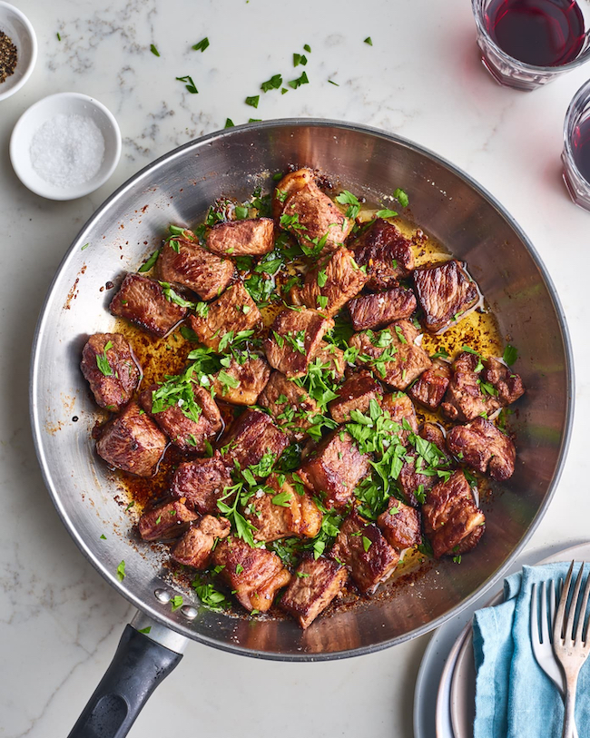

Garlic Butter Steak Bites

Garlic butter steak bites are everything you love about a steakhouse steak, with none of the work. Instead of cooking a whole steak, making a pan sauce, slicing the steak, and dipping into said sauce, these pieces of New York strip steak get cooked in a gorgeous garlic butter that’s built in the same pan the steak is cooked in. Pretty ingenious, right? Here’s how you can have perfect steakhouse bites any night of the week.
INGREDIENTS
- 4 cloves garlic
- 1/4 cup chopped fresh parsley leaves
- 2 pounds thick-cut New York strip steaks
- 1/2 teaspoon kosher salt
- 8 tablespoons (1 stick) unsalted butter
INSTRUCTIONS
- Mince 4 garlic cloves. Transfer to a bowl and add 1/2 teaspoon black pepper. Chop until you have 1/4 cup fresh parsley leaves, then transfer to a small bowl. Cut 2 pounds New York strip steak into 1-inch cubes, then season them with 1/2 teaspoon kosher salt.
- Melt 8 tablespoons (1 stick) unsalted butter in a large skillet over medium high-heat. Add the steak cubes and sear until browned, flipping them halfway through, 6 to 8 minutes total. Add the garlic and pepper and cook for 1 minute more. Remove from the heat and garnish with the parsley.
Return to HomePage